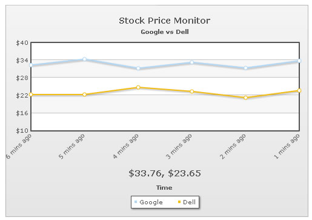
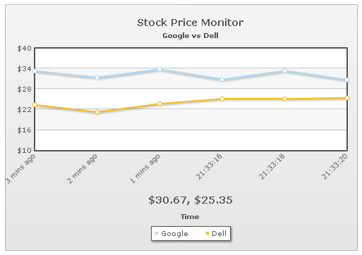
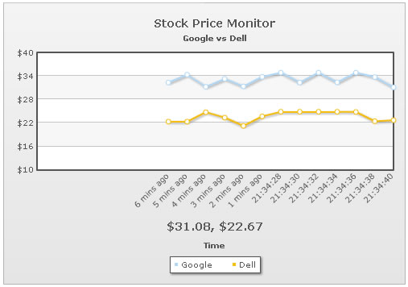

Data-streaming charts > Adding historical data |
In our previous examples, we had always started the chart with blank canvas (no data) and had it update itself over a span of time. However, if you want to the chart to initially show historical data and then keep on updating itself, you can easily do so by specifying the historical data in XML. |
| Specifying historical data in XML |
| The following XML shows how to push historical data in XML: |
| <chart caption='Stock Price Monitor' subCaption='Google vs Dell' dataStreamURL='http://localhost/FusionChartsOld/RealTime/StockPriceGoogDell.asp' refreshInterval='2' numberPrefix='$' setAdaptiveYMin='1' xAxisName='Time' showRealTimeValue='1' labelDisplay='Rotate' slantLabels='1'> <categories> <category label='6 mins ago' /> <category label='5 mins ago' /> <category label='4 mins ago' /> <category label='3 mins ago' /> <category label='2 mins ago' /> <category label='1 mins ago' /> </categories> <dataset seriesName='Google' showValues='0'> <set value='32.34' /> <set value='34.35' /> <set value='31.25' /> <set value='33.23' /> <set value='31.34' /> <set value='33.76' /> </dataset> <dataset seriesName='Dell' showValues='0'> <set value='22.34' /> <set value='22.34' /> <set value='24.75' /> <set value='23.34' /> <set value='21.23' /> <set value='23.65' /> </dataset> <styles> <definition> <style type='font' name='captionFont' size='14' /> </definition> <application> <apply toObject='Caption' styles='captionFont' /> <apply toObject='Realtimevalue' styles='captionFont' /> </application> </styles> </chart> |
As you can see above, we've:
When you now see the chart, you'll get something as under: |
|  |
Shown above is the chart when it intializes. You can see historical data being shown. |
|  |
| And the same chart after a few updates. |
| Increasing the number of points displayed on chart |
As you can see, here the chart now shows only 6 points in the chart. This is because when you specify historical data and do not specify numDisplaySets attribute, the chart shows only that many number of data points as specified in historical data. If you need to increase the number of points, you'll need to set it as under: <chart ... numDisplaySets='20' ..> This will enable the chart to show 20 data points for each data-set, as shown under: |
|  |
The space on left will be filled as and when chart receives more incremental data. Also, now, in this case if you've more than 20 historical data, the chart will show only the last 20 and ignore the others. |